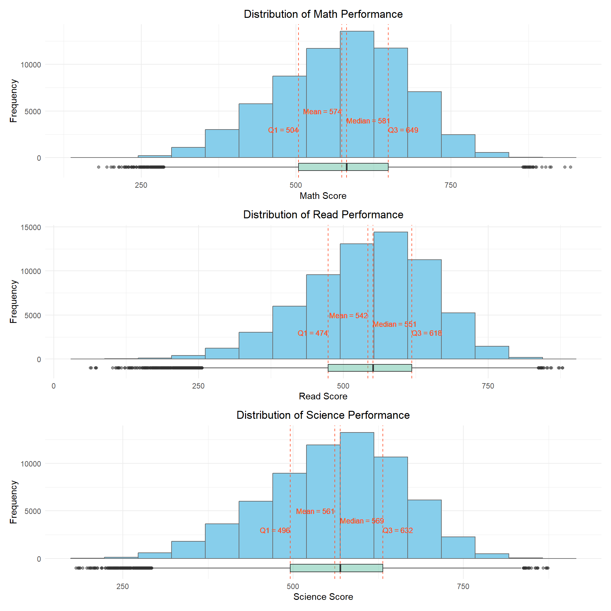
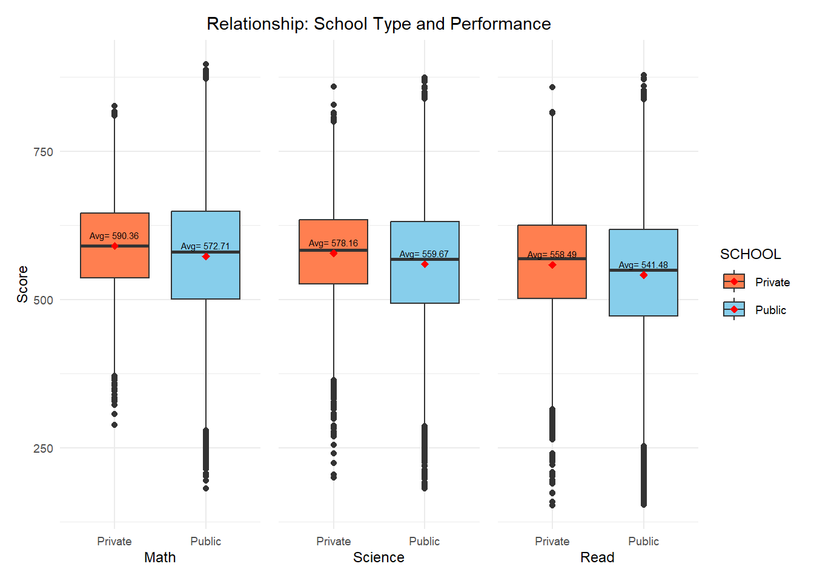
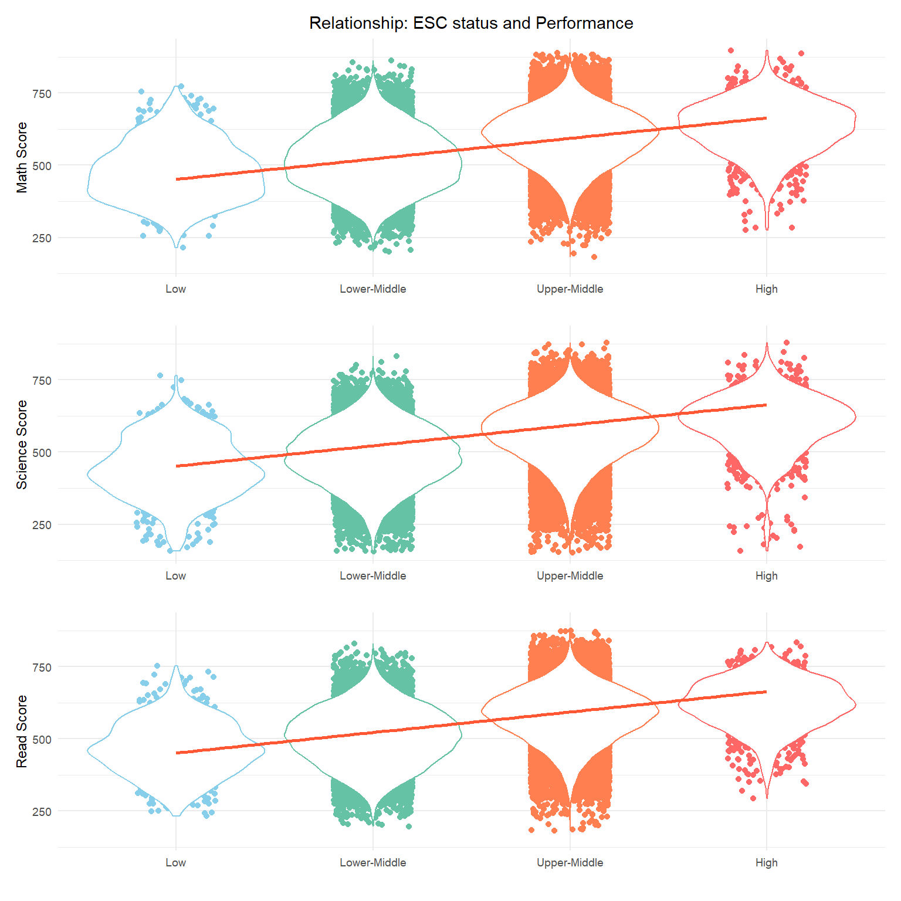

pacman::p_load(ggrepel, patchwork,
ggthemes, hrbrthemes,
tidyverse, ggpattern, ggridges)Take-home Exercise 2: DataVis Makeover
1 Overview
The purpose of this Take home exercise is to critique and improve on in Take-home Exercise 1. This will be done based on clarity and aesthetics. The original design will then be recreated using data visualisation design principles and best practices using their extensions and packages.
2 Data Preparation
In this part, we will follow the data preparation steps of our classmate’s TAKE HOME EXERCISE 1 for further data visualisation critique.
Code
stu_qqq_SG <- read_rds("data/stu_qqq_SG.rds")
select_df <- stu_qqq_SG[c(3:4,7,26,1039,1167:1196)]
math_long <- select_df %>%
pivot_longer(
cols = contains("MATH"),
names_to = "MATH",
values_to = "MATH_score"
)
math_long <- math_long %>%
arrange(CNTSCHID, CNTSTUID, STRATUM, ST004D01T, ESCS)
math_long_selected <- select(math_long, -contains("READ"), -contains("SCIE"))
read_long <- select_df %>%
pivot_longer(
cols = contains("READ"),
names_to = "READ",
values_to = "READ_score"
)
read_long <- read_long %>%
arrange(CNTSCHID, CNTSTUID, STRATUM, ST004D01T, ESCS)
read_long_selected <- select(read_long, -contains("MATH"), -contains("SCIE"), -one_of(names(math_long_selected)))
scie_long <- select_df %>%
pivot_longer(
cols = contains("SCIE"),
names_to = "SCIENCE",
values_to = "SCIENCE_score"
)
scie_long <- scie_long %>%
arrange(CNTSCHID, CNTSTUID, STRATUM, ST004D01T, ESCS)
scie_long_selected <- select(scie_long, -contains("MATH"), -contains("READ"), -one_of(names(math_long_selected)))
combined_long_df <- bind_cols(math_long_selected, read_long_selected, scie_long_selected)Code
#translate column names
school_map <- c("SGP01" = "Public/Secondary",
"SGP02" = "Public/Post-secondary",
"SGP03" = "Private/Secondary",
"SGP97" = "Undisclosed")
gender_map <- c("1" = "Female",
"2" = "Male")
clean_df <- combined_long_df %>%
mutate(SCHOOL = school_map[STRATUM],
GENDER = gender_map[ST004D01T],
Math = as.numeric(MATH_score),
Read = as.numeric(READ_score),
Science = as.numeric(SCIENCE_score),
ESC_status = round(((ESCS - min(ESCS, na.rm = TRUE))/
(max(ESCS, na.rm = TRUE)-min(ESCS, na.rm = TRUE)))*100, digits = 0),
ESC_status = case_when(
ESC_status >= 0 & ESC_status < 25 ~ "Low",
ESC_status >= 25 & ESC_status < 50 ~ "Lower-Middle",
ESC_status >= 50 & ESC_status < 75 ~ "Upper-Middle",
ESC_status >= 75 & ESC_status <= 100 ~ "High",
TRUE ~ as.character(ESC_status)
))
#remove columns which are not used to plot
clean_short_df <- clean_df %>%
select(-c(CNTSCHID, STRATUM, ST004D01T, ESCS, MATH_score, READ_score, SCIENCE_score))Code
#Calculate median,Q1,Q3,outliers for Math
median_math <- median(clean_short_df$Math)
quantiles_math <- quantile(clean_short_df$Math, probs = c(0.25, 0.75))
iqr_math <- quantiles_math[2] - quantiles_math[1]
upper_bound_math <- quantiles_math[2] + 1.5 * iqr_math
lower_bound_math <- quantiles_math[1] - 1.5 * iqr_math
outliers_math <- subset(clean_short_df, Math > upper_bound_math | Math < lower_bound_math)
#Calculate median,Q1,Q3,outliers for Read
median_read <- median(clean_short_df$Read)
quantiles_read <- quantile(clean_short_df$Read, probs = c(0.25, 0.75))
iqr_read <- quantiles_read[2] - quantiles_read[1]
upper_bound_read <- quantiles_read[2] + 1.5 * iqr_read
lower_bound_read <- quantiles_read[1] - 1.5 * iqr_read
outliers_read <- subset(clean_short_df, Read > upper_bound_read | Read < lower_bound_read)
#Calculate median,Q1,Q3,outliers for Science
median_science <- median(clean_short_df$Science)
quantiles_science <- quantile(clean_short_df$Science, probs = c(0.25, 0.75))
iqr_science <- quantiles_science[2] - quantiles_science[1]
upper_bound_science <- quantiles_science[2] + 1.5 * iqr_science
lower_bound_science <- quantiles_science[1] - 1.5 * iqr_science
outliers_science <- subset(clean_short_df, Science > upper_bound_science | Science < lower_bound_science)3 Data Visualization Critique
3.1 Distribution of Performance on each subject
Code
p1 <- ggplot(data = clean_short_df,
aes(x= Math))+
geom_histogram(bins=15,
color = "grey40",
fill="grey95",
size = 0.5)+
geom_vline(aes(xintercept=median_math),
color=c("#660000"),
size=0.5,
linetype="dashed") +
geom_text(x = median_math,
y = 400,
label = paste("Median=581"),
color = c("#660000"),
size = 2) +
geom_vline(xintercept = quantiles_math,
color = c("#FF6666"),
size = 0.5,
linetype = "dashed") +
geom_text(x = quantiles_math[1],
y = -300,
label = paste("Q1=504"),
hjust = 1,
color = c("#FF6666"),
size = 2) +
geom_text(x = quantiles_math[2],
y = -300,
label = paste("Q3=648"),
hjust = 0,
color = c("#FF6666"),
size = 2) +
geom_point(data = outliers_math,
aes(x = Math, y = 0),
color = c("#FFCC99"),
size = 0.8)+
ylab("")+
theme_minimal(base_size=8)
p2 <- ggplot(data = clean_short_df,
aes(x= Read))+
geom_histogram(bins=15,
color = "grey40",
fill="grey95",
size = 0.5)+
geom_vline(aes(xintercept=median_read),
color=c("#660000"),
size=0.5,
linetype="dashed") +
geom_text(x = median_read,
y = 450,
label = paste("Median=551"),
color = c("#660000"),
size = 1.8) +
geom_vline(xintercept = quantiles_read,
color = c("#FF6666"),
size = 0.5,
linetype = "dashed") +
geom_text(x = quantiles_read[1],
y = -350,
label = paste("Q1=473"),
hjust = 1,
color = c("#FF6666"),
size = 1.8) +
geom_text(x = quantiles_read[2],
y = -350,
label = paste("Q3=618"),
hjust = 0,
color = c("#FF6666"),
size = 1.8) +
geom_point(data = outliers_read,
aes(x = Read, y = 0),
color = c("#FFCC99"),
size = 0.8)+
labs(y="",title="Distribution of Performance")+
theme_minimal(base_size=8)
p3 <- ggplot(data = clean_short_df,
aes(x= Science))+
geom_histogram(bins=15,
color = "grey40",
fill="grey95",
size = 0.5)+
geom_vline(aes(xintercept=median_science),
color=c("#660000"),
size=0.5,
linetype="dashed") +
geom_text(x = median_science,
y = 450,
label = paste("Median=568"),
color = c("#660000"),
size = 1.8) +
geom_vline(xintercept = quantiles_science,
color = c("#FF6666"),
size = 0.5,
linetype = "dashed") +
geom_text(x = quantiles_science[1],
y = -350,
label = paste("Q1=495"),
hjust = 1,
color = c("#FF6666"),
size = 1.8) +
geom_text(x = quantiles_science[2],
y = -350,
label = paste("Q3=631"),
hjust = 0,
color = c("#FF6666"),
size = 1.8) +
geom_point(data = outliers_science,
aes(x = Science, y = 0),
color = c("#FFCC99"),
size = 0.8)+
ylab("")+
theme_minimal(base_size=8)
(p2/p3)|p1
Critique of Clarity
The numerical values in the current text labels are too small, making them less legible.
Y-axis information is not displayed, compromising the completeness of the graphs.
The arrangement using p2/p3 | p1 lacks clarity, making it difficult to distinguish the primary and secondary information.
The mean lines are not displayed, hindering an understanding of the data distribution.
The display of numerical values for outliers and quartiles is unclear, requiring a more intuitive representation.
Critique of Aesthetics
The title lacks alignment, affecting the overall design’s coherence.
The color selection is relatively monotonous, lacking vibrancy and visual appeal.

Code
p1 <- ggplot(data = clean_short_df, aes(x = Math)) +
geom_histogram(bins = 15, color = "grey40", fill = "skyblue", size = 0.5) +
geom_vline(aes(xintercept = median_math), color = "#FF5733", size = 0.5, linetype = "dashed") +
geom_text(x = median_math, y = 4000, label = paste("Median =", round(median_math)), hjust = 0, color = "#FF5733", size = 3) +
geom_vline(xintercept = quantiles_math, color = "#FF5733", size = 0.5, linetype = "dashed") +
geom_text(x = quantiles_math[1], y = 3000, label = paste("Q1 =", round(quantiles_math[1])), hjust = 1, color = "#FF5733", size = 3) +
geom_text(x = quantiles_math[2], y = 3000, label = paste("Q3 =", round(quantiles_math[2])), hjust = 0, color = "#FF5733", size = 3) +
geom_vline(aes(xintercept = mean(clean_short_df$Math)), color = "#FF5733", size = 0.5, linetype = "dashed") +
geom_text(x = mean(clean_short_df$Math), y = 5000, label = paste("Mean =", round(mean(clean_short_df$Math))), hjust = 1, color = "#FF5733", size = 3) +
labs(y = "Frequency", x = "Math Score",title = "Distribution of Math Performance") +
geom_boxplot(width = 800, fill = "#66c2a5", alpha = 0.5, position = position_nudge(y = -1000)) +
theme_minimal()+theme(plot.title = element_text(hjust = 0.5))
p2 <- ggplot(data = clean_short_df, aes(x = Read)) +
geom_histogram(bins = 15, color = "grey40", fill = "skyblue", size = 0.5) +
geom_vline(aes(xintercept = median_read), color = "#FF5733", size = 0.5, linetype = "dashed") +
geom_text(x = median_read, y = 4000, label = paste("Median =", round(median_read)), hjust = 0, color = "#FF5733", size = 3) +
geom_vline(xintercept = quantiles_read, color = "#FF5733", size = 0.5, linetype = "dashed") +
geom_text(x = quantiles_read[1], y = 3000, label = paste("Q1 =", round(quantiles_read[1])), hjust = 1, color = "#FF5733", size = 3) +
geom_text(x = quantiles_read[2], y = 3000, label = paste("Q3 =", round(quantiles_read[2])), hjust = 0, color = "#FF5733", size = 3) +
geom_vline(aes(xintercept = mean(clean_short_df$Read)), color = "#FF5733", size = 0.5, linetype = "dashed") +
geom_text(x = mean(clean_short_df$Read), y = 5000, label = paste("Mean =", round(mean(clean_short_df$Read))), hjust = 1, color = "#FF5733", size = 3) +
labs(y = "Frequency", x = "Read Score",title = "Distribution of Read Performance") +
geom_boxplot(width = 800, fill = "#66c2a5", alpha = 0.5, position = position_nudge(y = -1000)) +
theme_minimal()+theme(plot.title = element_text(hjust = 0.5))
p3 <- ggplot(data = clean_short_df, aes(x = Science)) +
geom_histogram(bins = 15, color = "grey40", fill = "skyblue", size = 0.5) +
geom_vline(aes(xintercept = median_science), color = "#FF5733", size = 0.5, linetype = "dashed") +
geom_text(x = median_science, y = 4000, label = paste("Median =", round(median_science)), hjust = 0, color = "#FF5733", size = 3) +
geom_vline(xintercept = quantiles_science, color = "#FF5733", size = 0.5, linetype = "dashed") +
geom_text(x = quantiles_science[1], y = 3000, label = paste("Q1 =", round(quantiles_science[1])), hjust = 1, color = "#FF5733", size = 3) +
geom_text(x = quantiles_science[2], y = 3000, label = paste("Q3 =", round(quantiles_science[2])), hjust = 0, color = "#FF5733", size = 3) +
geom_vline(aes(xintercept = mean(clean_short_df$Science)), color = "#FF5733", size = 0.5, linetype = "dashed") +
geom_text(x = mean(clean_short_df$Science), y = 5000, label = paste("Mean =", round(mean(clean_short_df$Science))), hjust = 1, color = "#FF5733", size = 3) +
labs(y = "Frequency", x = "Science Score",title = "Distribution of Science Performance") +
geom_boxplot(width = 800, fill = "#66c2a5", alpha = 0.5, position = position_nudge(y = -1000)) +
theme_minimal() +theme(plot.title = element_text(hjust = 0.5))
p1/p2/p3
Clarity Improvements
Increased the size of numerical values in labels (e.g., median, quartiles, mean) for better legibility. The
size = 3parameter in thegeom_textfunctions was adjusted.Displayed Y-axis labels (
"Frequency") in each plot and changed X-axis labels name (Subject Score) to provide context and enhance the completeness of the graphs.Adjust the arrangement of graphs horizontally to provide a clearer view of each subject’s distribution using
p1/p2/p3.Added mean lines to the plots (geom_vline) to enhance the understanding of the data distribution. The mean is now visually represented with dashed lines.
Enhance clarity by incorporating a boxplot below each histogram, providing a more intuitive representation of outliers, quartiles, and the median.
Aesthetics Improvements
Adjust the alignment of the title to ensure consistency and professionalism throughout the design, enhancing overall aesthetics.
Introduced a more vibrant color scheme with varied shades of blue, green and red (“skyblue”, “#66c2a5”, “#FF5733”) to enhance visual appeal and reduce monotony.
3.2 Relationship b/w school types and performance
Code
p7 <- ggplot(data = clean_short_df,
aes(y = Math,
x= SCHOOL)) +
geom_boxplot(notch=TRUE)+
theme_minimal(base_size=7)+
labs(x="",title="Relationship: School Type and Performance")
p8 <- ggplot(data = clean_short_df,
aes(y = Science,
x= SCHOOL)) +
geom_boxplot(notch=TRUE)+
theme_minimal(base_size=7)+
labs(x="School Type")
p9 <- ggplot(data = clean_short_df,
aes(y = Read,
x= SCHOOL)) +
geom_boxplot(notch=TRUE)+
theme_minimal(base_size=7)+
labs(x="")
p7+p8+p9
Critique of Clarity
The plots lack Y-axis labels, hindering the interpretation of the numerical values represented..
Considering the similarity in Y-axis values across the three plots, combining them into a single plot with a shared Y-axis might simplify the visual presentation and facilitate comparison.
When the medians are closely grouped, discerning differences becomes challenging.
Critique of Aesthetics
The titles are not centered, which affects the overall visual appeal.
Introducing distinct colors for different school types would enhance clarity and alleviate potential confusion.
The lengthy names of school types might compromise the visual aesthetics.

Code
clean_short_df <- clean_short_df %>%
mutate(SCHOOL = recode(SCHOOL, "Private/Secondary" = "Private", "Public/Secondary" = "Public"))
school_colors <- c("Private" = "coral", "Public" = "skyblue")
p7 <- ggplot(data = clean_short_df, aes(y = Math, x = SCHOOL, fill = SCHOOL)) +
geom_boxplot() +
stat_summary(fun = mean, geom = "point", shape = 18, size = 2, color = "red", position = position_dodge(width = 0.75)) +
stat_summary(fun = function(x) mean(x), geom = "text", aes(label = paste("Avg=", round(..y.., 2))),
position = position_dodge(width = 0.75), vjust = -1, size=2,show.legend = FALSE) +
labs(y = "Score", x="Math")+
scale_fill_manual(values = school_colors) +
theme_minimal(base_size = 9) +
ylim(150, 900) + guides(fill = FALSE)
p8 <- ggplot(data = clean_short_df, aes(y = Science, x = SCHOOL, fill = SCHOOL)) +
geom_boxplot() +
scale_fill_manual(values = school_colors) +
stat_summary(fun = mean, geom = "point", shape = 18, size = 2, color = "red", position = position_dodge(width = 0.75)) +
stat_summary(fun = function(x) mean(x), geom = "text", aes(label = paste("Avg=", round(..y.., 2))),
position = position_dodge(width = 0.75), vjust = -1, size=2,show.legend = FALSE) +
theme_minimal(base_size = 9) +
labs(y = "", x = "Science", title = "Relationship: School Type and Performance") +
ylim(150, 900) +
theme(axis.text.y = element_blank(), axis.title.y = element_blank()) + guides(fill = FALSE) +theme(plot.title = element_text(hjust = 0.5))
p9 <- ggplot(data = clean_short_df, aes(y = Read, x = SCHOOL, fill = SCHOOL)) +
geom_boxplot() +
scale_fill_manual(values = school_colors) +
stat_summary(fun = mean, geom = "point", shape = 18, size = 2, color = "red", position = position_dodge(width = 0.75)) +
stat_summary(fun = function(x) mean(x), geom = "text", aes(label = paste("Avg=", round(..y.., 2))),
position = position_dodge(width = 0.75), vjust = -1,size=2, show.legend = FALSE) +
theme_minimal(base_size = 9) +
labs(y = "", x = "Read") +
ylim(150, 900) +
theme(axis.text.y = element_blank(), axis.title.y = element_blank())
p7 + p8 + p9
Clarity Improvements
Added Y-axis labels to each plot, specifically for the “Score” variable. This improvement aids in understanding the scale and context of the plotted values.
Boxplots with means represented by red points and labeled with “Avg=” followed by the rounded average values. This provides additional information and makes the plots more informative.
Maintained individual plots for each subject (Math, Science, and Read) but combined them into a single plot with a shared Y-axis. This consolidation simplifies the visual representation and facilitates easier comparison of similar Y-axis values.
Aesthetics Improvements
Introduced distinct colors for each school type (“Private” and “Public”) using “coral” and “skyblue,” respectively. This enhances clarity and helps differentiate between the two types visually.
Centered the title “Relationship: School Type and Performance” above the combined plot. This enhances the aesthetic appeal and provides a more balanced presentation.
Modified school type names to be more concise and clear by recoding “Private/Secondary” to “Private” and “Public/Secondary” to “Public.”
3.3 Relationship b/w socioeconomic status and performance
Code
p10<-ggplot(data = na.omit(clean_short_df),
aes(y = Math,
x= ESC_status)) +
geom_boxplot(notch=TRUE)+
theme_minimal(base_size=6)+
labs(x="ESC status", title="Relationship: ESC status and Performance")
p11<-ggplot(data = na.omit(clean_short_df),
aes(y = Read,
x= ESC_status)) +
geom_boxplot(notch=TRUE)+
theme_minimal(base_size=6)+
labs(x="")
p12<-ggplot(data = na.omit(clean_short_df),
aes(y = Science,
x= ESC_status)) +
geom_boxplot(notch=TRUE)+
theme_minimal(base_size=6)+
labs(x="")
p10+p11+p12
Critique of Clarity
The plots lack Y-axis labels, hindering the interpretation of the numerical values represented..
The x-axis categories “ESC status” lack proper sorting, particularly for “status,” where an ordered representation (e.g., “Low,” “Lower-Middle,” “Upper-Middle,” “High”) could enhance clarity and facilitate easier comparison.
The absence of a regression line (lm line) makes it challenging to visually assess the relationship between ESC status and student performance.
Critique of Aesthetics
The titles are not centered, which affects the overall visual appeal.
There is a need for improved color differentiation for different ESC statuses.

Code
clean_short_df$ESC_status_numeric <- as.numeric(clean_short_df$ESC_status)
esc_factor_order <- c("Low", "Lower-Middle", "Upper-Middle", "High")
ESC_status_color <- c("High" = "#FF6666", "Upper-Middle" = "coral", "Lower-Middle" = "#66c2a5", "Low" = "skyblue")
clean_short_df$ESC_status <- factor(clean_short_df$ESC_status, levels = esc_factor_order, ordered = TRUE)
clean_short_df$ESC_status_numeric <- as.numeric(clean_short_df$ESC_status)
clean_short_df$ESC_status <- factor(clean_short_df$ESC_status, levels = esc_factor_order, ordered = TRUE)
p10 <- ggplot(data = na.omit(clean_short_df),
aes(y = Math,
x = ESC_status, color = ESC_status)) +
geom_jitter(width = 0.2) +geom_violin(scale = "width", trim = TRUE)+
geom_smooth(aes(x = ESC_status_numeric, y = Math), method = "lm", se = FALSE, color = "#FF5733") +
theme_minimal(base_size = 6) +
labs(y = "Math Score", x = "", title = "Relationship: ESC status and Performance") +
scale_color_manual(values = ESC_status_color) +
theme_minimal(base_size = 9) +
ylim(150, 900) +
theme(plot.title = element_text(hjust = 0.5)) +
guides(color = FALSE)
p11 <- ggplot(data = na.omit(clean_short_df),
aes(y = Read,
x = ESC_status, color = ESC_status)) +
geom_jitter(width = 0.2) + geom_violin(scale = "width", trim = TRUE) +
geom_smooth(aes(x = ESC_status_numeric, y = Math),method=lm, color = "#FF5733",se = FALSE)+
theme_minimal(base_size = 6) +
labs(y = "Science Score", x = "") +
scale_color_manual(values = ESC_status_color) +
theme_minimal(base_size = 9) +
ylim(150, 900) +
guides(color = FALSE) +
theme(plot.title = element_text(hjust = 0.5))
p12 <- ggplot(data = na.omit(clean_short_df),
aes(y = Science,
x = ESC_status, color = ESC_status)) +
geom_jitter(width = 0.2) + geom_violin(scale = "width", trim = TRUE) +
geom_smooth(aes(x = ESC_status_numeric, y = Math),method=lm, color = "#FF5733",se = FALSE) +
theme_minimal(base_size = 6) +
labs(y = "Read Score", x = "") +
scale_color_manual(values = ESC_status_color) +
theme_minimal(base_size = 9) +
ylim(150, 900) +
guides(color = FALSE)
p10 / p11 / p12
Clarity Improvements
Added Y-axis labels to each plot (“Math Score,” “Science Score,” “Read Score”) for better interpretation and understanding of the plotted values.
Ensured proper sorting of x-axis categories, especially for “status.” The “ESC_status” is now converted to an ordered factor with the specified order (“Low,” “Lower-Middle,” “Upper-Middle,” “High”).
Added a regression line (lm line) to each plot for a more intuitive comparison and to visually assess the relationship between ESC status and student performance.
Used
geom_violininstead of Boxplot to enhance clarity by providing a visual representation of the distribution of scores for each ESC status. Violin plots convey information about the data distribution, making it easier to understand the spread and density of scores.Applied
geom_jitterto add jitter to the points, preventing overlap and improving the visibility of individual data points. This ensures that each data point especially the outlier is distinct and contributes to a clearer representation of the dataset.
Aesthetics Improvements
Center-aligned the plot titles (“Relationship: ESC status and Performance”) for enhanced visual appeal and overall design coherence.
Used
scale_color_manualfor the customization of colors for each ESC status. This not only contributes to improved clarity by differentiating between categories but also enhances the overall aesthetics of the plots. Distinct colors make the visual representation more appealing.